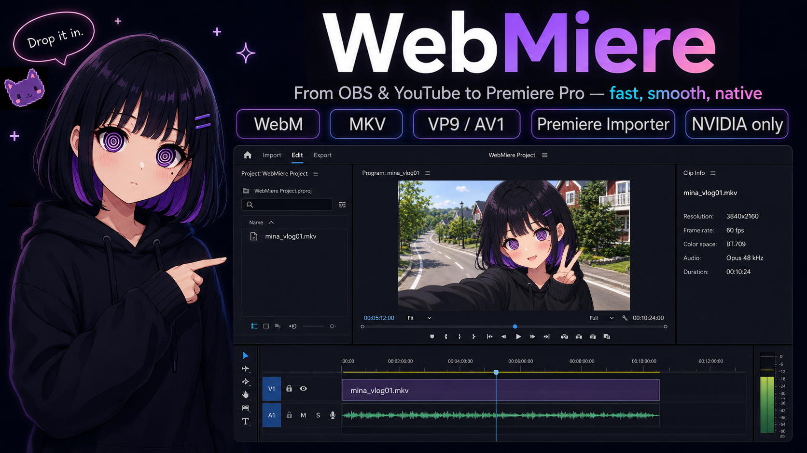

Premiere Pro importer
From OBS and yt-dlp to Premiere Pro.
Drop WebM/MKV directly into your timeline.
VP9 / AV1 video, Opus audio, and up to six separate OBS audio tracks.

Premiere Pro importer
Drop WebM/MKV directly into your timeline.
VP9 / AV1 video, Opus audio, and up to six separate OBS audio tracks.
